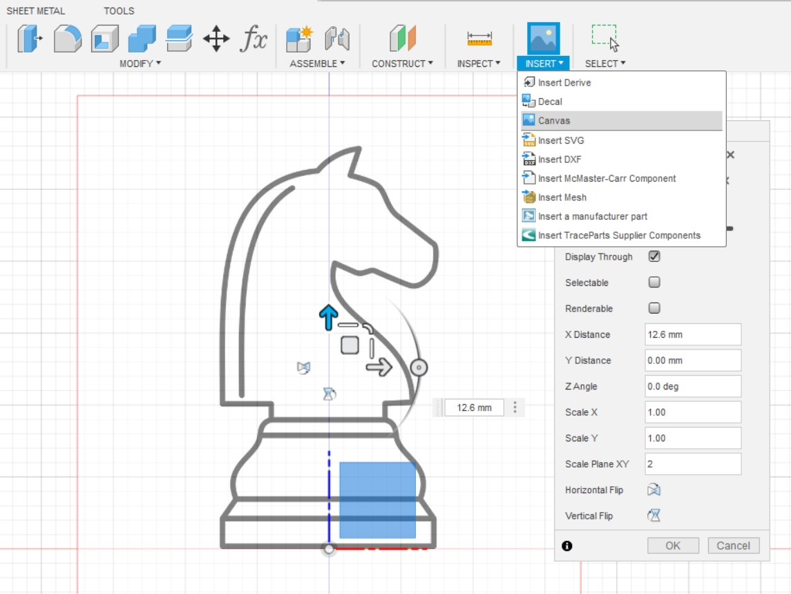

Intoduction
3D printing, which is also know as additive manufacturing, is a proccess where layers of material are built up to create a 3D object. In this webpage, I will show you how 3D printing is done through the Knight Chess Piece assignment.
[INSERT IMAGE]
Knight Chess Piece Design
Go online and search for an image of a knight chess piece and save it to your computer. Then, use the Canvas function to import an image of a knight chess piece and place it perpendicular to the XY plane.
{kind=link}
Sketch the base of the knight chess piece using Spline and revolve it.


Do the same for the head of the chess piece but make sure to leave out the mane when extruding.

Extrude the mane of the horse head with a different width.
Lastly, add some eyes to it using the hole function, mirror it to the other side and .... you're done!

3D Printing
Export the file as STL and import it into Ultimaker Cura a slicing sftware which is used to convert the 3D model into instructions for the 3D printer.
[INSERT IMAGE]